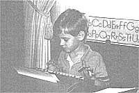

Country Skills
Being taught at home made my family closer and my education an adventure.
It's almost September, and 46,000,000 kids across the country will be grabbing their milk money, bagged lunches, and blank notebooks and heading back to school. But according to Chris Klicka, Senior Council for the Home School Legal Defense Association (HSLDA), approximately one million children in the United States won't be going anywhere-they'll be schooled right at home.
Many of us have mulled over the pros and cons of home schooling and perhaps considered doing it ourselves...but there are still basic questions many of us share: How effective is this type of schooling? How do parents discipline their children during class time? How do kids learn to socialize with others their own age? How do colleges and universities rate this type of education come admissions time?
While there are two sides to every story, we thought itd be interesting to hear from someone who has been through the homeschooling process and looks back on it with enthusiasm. We asked D. S. Smith, who was taught at home by his mother and father, to share his individual experience.
- The Editors
Before I reached school age, everyone assumed I'd head off to school like all the other kids. Who would expect anything else from a supervising principal's son in suburban Toronto, Ontario? After all, he was in charge of an entire school district of seven schools. But Dad had other plans. His job within the administration had left him dissatisfied and disillusioned with the system. He wanted a change; he wanted out. As a result, he abandoned his teaching career, packed our worldly goods into a rented three-ton truck, and hauled us 1,000 miles east to rural New Brunswick. There he installed us in an old colonial farmhouse with a cavernous living room and massive fireplaces.
The decision to teach me at home was not an easy one - Mother and Dad discussed the options for more than a year before finally reaching it. You have to realize that, at the time, this was uncharted territo ry. In those days before home schooling was a cause célébre - complete with its newsletters and national associations-nobody taught their children at home. The only exceptions were those kids whose parents were stationed overseas, lived far in the backwoods, or were born to millionaires who hired personal tutors for them.
Dad's first step was writing a formal letter to the Department of Education. In his letter he stated his qualifications, his intention to teach me at home, and the course of study he would follow. He chose Calbert School, figuring it would cause less trouble with the department if he followed a recognized course of study. He also extended an open invitation to the school inspector to drop by whenever he wished. So we made the break and stepped off together on a journey into the unknown, with no map or preconceived plan.
Our new neighbors, it may be said, were less than enthusiastic about this "smart city professor" who had the nerve to teach his kids at home. Some, we later heard, went as far as writing letters of complaint to the authorities about those kids who "weren't in school." Others, in typical rural fashion, merely shrugged their shoulders. What Dad did was his business.
So the experience began ...an experience that, as year followed year, Dad and Mother could scarcely have foreseen when I started the first grade. My brother grew up, reached school age, and joined me at the desk. Two more brothers were born, and they grew up and joined us at another desk. The four of us bent over our books in that drafty old living room, watching daily the big yellow school buses haul neighborhood kids off to school. Every day, from 9 A.M. to 3:30 P.m., we pored over our books at a big trestle desk.
I must admit my education started long before I began formal study. It began on those long winter evenings when Dad would sit and read aloud to Mother and me. (Dad's English class students, it was said, rushed through their lessons just so they'd have time for his next installment of Geoffrey Trease's Cue for Treason.) We read Defoe's Robinson Crusoe (until the footprints and cannibals cost me a couple of bad dreams), Captain Marryat's Masterman Ready (I told Dad it was too sad, so we had to leave it for a few years), and I particularly remember a biography of George Washington Carver, the biochemist born into slavery who invented peanut butter. Then, in addition, there were always selections ready to read aloud from the Reader's Digest. It is only now that I realize this reading aloud was a vital part of my education, for it taught me my essential love of books and made me want to reach beyond the formal confines of lessons and grades. There was no hidden "plot" behind Dad's reading. He did it because he loved to share the experience.
For me, however, school always began on a certain sunny day in August. Dad and I drove more than 30 miles into the city and marched into the Customs Office to collect a heavy cardboard box with a yellow label marked: "Calvert School, Baltimore, Maryland"-a wondrous box filled with books, pencils, paper, and crayons. I couldn't wait to start. I thought I'd be reading like Dad tomorrow, although it actually took quite a while before I was reading on my own. When I succeeded, I began reaching out for ever higher reading levels, grappling with words I couldn't pronounce and digging their meanings out of the context. By the time I was 10 I was reading on an adult level and poor Dad was constantly in libraries searching for new books. When I was in high school it was a bad week when I didn't read at least two books, mostly autobiographies.
Needless to say, teaching us at home required quite an effort on Dad and Mother's part-an effort that steadily increased as the years went along. By the time I started high school, we had four separate grades, starting with grade one, going on in the same room. For some years Dad published handbooks for teachers and later had his own graphic arts studio in the house. This meant both he and Mother were available to help with the lessons. Many were the times we'd be stacked up two or three deep at the drafting board waiting for help. Sometimes I wonder how they got any work done at all.
We soon learned that we went to Mother any time we needed help with our grammar lessons (what a grip she had on English structure!). She even had the answers to the difficult questions that we couldn't find in the books. When I reached grade eight, the increasing load was so heavy that most of the responsibility for my lessons, with the exception of exams, fell on my shoulders. Mother or Dad would mark my work and grade it, but it was up to me to do my lessons properly and on schedule.
By high school, I began to take on some of the teaching load, helping out my younger brothers. I had to; there was only so much work that Dad and Mother could handle with everything else they had to do. This meant that when my brothers ran into difficulty they came to me for tutoring. This not only helped them but also me-there's nothing like tutoring someone else in order to reinforce the fundamentals of math and grammar in your own mind.
Dad read aloud to me because he loved to share the experience. What I didn't know at the time was that this experience was a vital part of my education.
Many people are amazed to find out that home schooling is legal in all 50 states. However, the laws regulating home education vary considerably from state to state. "Some states and school superintendents abuse their authority and excessively regulate home schoolers," says Chris Klicka of the Home School Legal Defense Association (HSLDA). Founded in 1983, HSLDA provides free legal counsel to member families and fights legal and legislative battles.
According to Klicka, the U.S. Supreme Court determined in 1972, in the case of Wisconsin v. Yoder, that parents do have the constitutional right to teach their own children, based on the first Amendment (freedom of religion) and the 14th Amendment (right of liberty). This was interpreted by the court to include parental liberty.
The states are categorized into three groups, according to the type of law they have. The first group, which encompasses 34 states, has a homeschool law. "They actually use the word 'home school,' says Klicka. "They define the rights of the family and the rights and limitations of the states. In those states, you know where you stand." In half of these states, home schoolers have to file notice of intent annually with the state. They all require certain subjects to be taught, and they require 180 days of in struction. The other half add to that required testing or evaluation every year, or every other year, to monitor progress. Apparently, these laws work pretty well.
The second group of states (there are 12) has no homeschool law. These include: Alabama, Alaska, California, Delaware, Illinois, Indiana, Kansas, Kentucky, Michigan, Nebraska, Oklahoma, and Texas. "They say you have to attend 'public or private' school," Klicka says. "Home schoolers try to fit into the private category. They have a lot of freedom in most of these states."
One serious exception is Michigan, which insists parents must be certified to teach their children. The HSLDA handled 12 court cases in Michigan in 1991 and won them all.
The third category is what Klicka calls the "approval" states, which includes Maine, Rhode Island, Utah, Massachussetts, and South Dakota. These have no home-school law, but require approval on a case-by-case basis from the local school superintendents. "There really isn't any language (in the law) that would allow home schools as private schools," Klicka explains. "It is up to the whim of the local superintendent to determine who can or cannot home school. It is very frustrating and very arbitrary-a lot of states used to be like that."
The HSLDA gets a lot of the credit for changing the laws and making the environment in many states a little friendlier toward home schooling.
-Karen House
All through those years of elementary and high school, we were encouraged to develop our own inborn interests that had no direct connection with school. Often, Dad would start us off by bringing home a special book from the library that he thought might interest one of us. Extracurricular studies were diligently pursued-sometimes so diligently that our lessons suffered. We immersed ourselves in astronomy, paleontology, blacksmithing, auto repair and maintenance, geology, carpentry, dairy-goat husbandry, and so on. In between, there was never television. We'd collect everything we could lay our hands on; press leaves and flowers; build model aircraft, ships, and houses; learn to cook and bake bread; wash dishes and cut the winter's wood. We also caught each other's colds and chicken pox and had our share of arguments and fights.
As for disciplining us when we turned in poor work or goofed off, the worst Dad did was tell us to go think about it. "Come back when you're prepared to work," he'd say. Sometimes he only had to quietly look at us and we'd know that the shoddy piece of work wasn't nearly good enough. I can still remember his expression when I passed him a one and a half page, gradefour composition on Robinson Crusoe. He read it, looked at me, and asked how long it took. I said, biting my lip: "Three hours." (I'd spent most of the time looking out the window.) His comment: "You can do a lot better than that." I remember wishing the floor would open and swallow me whole.
With Calvert School ending at grade eight, we had to consider high school. We were at a loss. I well remember the hours Dad and I spent discussing the options. Public high school was never considered. Finally, we chose the University of Nebraska Extension Division and embarked on a new phase of the journey.
My years with the University of Nebraska Extension Division were years of hard work and challenge. The courses were above par and for the first time I was sending in weekly assignments to be marked. That, for me, was a very different experience. I must admit that an added attraction was the fact that most of my instructors were young women.
I learned to speak French struggling with an old reel-to-reel tape recorder, which had belts that tended to slip if I failed to keep them clean and dry. In the meantime, the interminable modern English assignments made me sweat for hours as I learned the rudiments of writing. Because I hated it, I taught myself to write as succinctly as possible. The fewer words I put down, the less I had to write. I remember turning in a book report on Field Marshal Montgomery's memoirs. I thought it passable, but not superlative. Yet, Mrs. Carlbom gave me the highest mark possible. Then she kept the report, adding: "If you don't mind, it's always nice to have something to show the student teachers what to expect." I was rather pleased, but after all these years I'm still trying to figure out what on earth I wrote in that report to cause such a reaction.
So I've come through the home-schooling experience. For me the dividends are immense, the disadvantages minimal. To be sure, if you're going to teach your kids at home, at least one parent has to be there all the time. Some people may find having the kids underfoot all day, everyday, more than they're prepared to accept. But in our family, having us all together most of the time strengthened our family unit and made it unshakable. As a result, come hard or good times, there was nothing we couldn't go through and survive.
A woman I met a couple of months ago, on learning we had been taught at home, exclaimed how lucky our parents were, saying: "They must have saved a lot of money!" I'm afraid I gaped at her in disbelief, for I know that during high school, in particular, it cost my family far more to study at home than if I'd gone to school. When I asked her what she meant she said, "Well, the cost of clothes and school supplies...." I still can't figure out her reasoning. In our minds, the cost of the education never entered into the equation and with the state of our income; we spent far more on education than one would believe we could afford. Money was certainly never flush in our house.
Then there are those who like to pose the old question with all its variants: "Didn't you miss interacting with your peers?" "Didn't you miss the competition?" "Didn't you miss the `real life' experience?" "After all," they'd say, "School is where you learn to prepare for life!" Our preparation for life was life itself as we lived each day, one by one. By the time we reached our teens, we'd amassed more experience and knowledge of people and their foibles, good and bad, than many kids gain in a lifetime.
Others ask if we suffered from the lack of amenities-those fancy labs, libraries, gyms, swimming pools, and lecture theaters of the large regional schools? My chemistry lab was the kitchen table, the wood stove my Bunsen burner. Did I suffer from that? Frankly, it all added to the adventure. For libraries, we had eight public and three university libraries only an hour away, their doors open to us every time we went to town. I can assure you they were used. Every two weeks saw a new stack of books in the house. Nobody used those libraries the way we did.
For physical education class, the gym and pool were certainly not missed. We had the entire woods at our back door just waiting to be explored. In high school, after a day hunched over the books, an hour or two on cross-country skis was an eagerly anticipated end to the day.
For us, all of these "disadvantages" became dividends. And those dividends are hard to quantify, for there is no standard unit of measurement. Yet, they are there, all the same, invaluable and incalculable. Measurement of education is always relative. Certificates and diplomas do not necessarily denote a person's ability. Some of the most able people I've ever known, and I'm sure some that you've known, didn't have the "required" paperwork to match their success.
I have undertaken a number of advanced studies in subjects as diverse as marine biology, naval architecture, and creative writing. Studying is something I will continue for the rest of my life, although I haven't chosen which subjects to take on next. So, I can hear you asking, what will I do when I have kids of my own? Will I follow the same path Dad took and teach them at home? You bet I will. In fact, the books are packed away in a corner of the barn loft, waiting.
Resources:
Home School Legal Defense Assoc.
P.O. Box 159
Paeonian Springs, VA 22129
703/338-5600
National Center for Home Education
P.O. Box 125
Paeonian Springs, VA 22129
703/882-4770
|
 Whe deciding whether or not to home school, parents must first make sure they have the time to devote. |
|
|